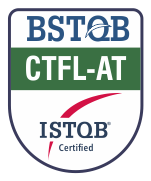
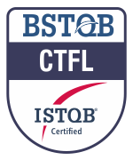

Sobre Mim
Residente em Porto Alegre/RS, sou graduado em Sistemas de Informação pela PUCRS e atuo há mais de 18 anos na área de Qualidade de Software. Tenho sólida experiência na condução de testes manuais, automação e metodologias ágeis em projetos de grande porte. Atualmente, tenho foco total na automação de testes de API e no desenvolvimento de scripts automatizados para web/interfaces com ferramentas como Selenium e Playwright, integrados a pipelines de CI/CD. Além disso, aplico Inteligência Artificial no dia a dia para otimizar o planejamento, a automação e as rotinas de QA. Destaco-me pela proatividade, visão analítica e busca constante por eficiência técnica.
Competências
Automação de Testes
- Playwright
- Selenium WebDriver
- Appium
- Cypress
- Robot Framework
- Cucumber / BDD
- JUnit
- SoapUI
IA Generativa
- ChatGPT
- Claude
- Revisão de documentação
- Engenharia de Prompt
- Análise de erros
- Geração de scripts automatizados
Testes de API
- Postman
- SoapUI
- REST / SOAP
Mobile
- Appium
- Android Studio
- BrowserStack
Gestão de Testes
- Jira
- TestLink
- Mantis
- Bugzilla
Banco de Dados
- Oracle
- MySQL
- SQLServer
- PostgreSQL
Linguagens
- Java
- JavaScript
Metodologias
- Scrum
- Kanban
- BDD
- UML
CI/CD
- GitHub Actions
- GitLab CI/CD
Certificações
-

CTFL-AT – Agile Tester (ISTQB) - 2024 -

CTFL – Foundation Level (ISTQB) - 2022
Experiência Profissional
Analista de Testes Sênior SoftExpert
05/2025 – 05/2026
- Atuação ponta a ponta em squad de integração de dados: Garantia da qualidade e estabilidade de entregas complexas que envolvem tanto regras de negócio no back-end quanto a experiência do usuário no front-end.
- Testes de API e validação de dados: Planejamento e execução diária de testes de APIs REST e SOAP, utilizando ferramentas como Postman e SoapUI para garantir a consistência e a integridade dos fluxos de dados integrados.
- Arquitetura e desenvolvimento de testes automatizados: Implementação de automação com Playwright para ambiente web e API, seguindo o padrão Page Object Model (POM). Inovação no projeto com a introdução de MCP (Model Context Protocol) para otimizar a estrutura da automação.
- IA Generativa aplicada à qualidade: Otimização da rotina de QA através do uso estratégico de ferramentas como ChatGPT e Claude. Aplicação prática de IA para acelerar a escrita de documentações técnicas, análise de defeitos e modelagem ágil de casos de teste.
- Gestão e resolução de chamados críticos: Atuação direta no suporte escalado para o time de QA, focando na análise de causa raiz de problemas em produção para retroalimentar e blindar a esteira de testes.
Analista de Testes Sênior Compass UOL
12/2021 – 11/2024
- Projeto Ancar: Responsável pela estratégia e execução de testes manuais e automatizados do aplicativo mobile da Ancar, atuando sob as metodologias Scrum e Kanban. Desenvolvimento e estruturação da arquitetura de automação mobile em linguagem Java com Maven para gerenciamento de bibliotecas, utilizando o framework Appium para execução dos testes e o Appium Inspector para inspeção de elementos. Implementação da cultura BDD através da integração com o plugin do cucumber, garantindo melhor padronização e documentação dos casos de teste. Validação de qualidade multiplataforma focada em ecossistemas IOS e Android, utilizando emuladores do Android Studioe a plataforma BrowserStack para cobrir testes em dispositivos reais e garantir a compatibilidade do app.
- Projeto Caixa: Atuação como QA Sênior na validação e testes de integridade de APIs de backend focadas em motores de cálculo complexos, além de garantir a qualidade na implementação da nova plataforma de crédito (mobile e back-end). Participação estratégica na remodelagem completa de toda a jornada do usuário e fluxo de telas do produto de Crédito Consignado.
Analista de Testes Sênior Sonda – CTIS (Cliente: Inmetro)
03/2020 – 12/2021
- Garantia de Qualidade e Homologação Multiplataforma: Atuação na validação de sistemas internos complexos desenvolvidos em diversas arquiteturas, incluindo ambientes legados e modernos (Oracle Forms, PHP e Android).
- Arquitetura de Automação com Selenium e Java: Planejamento, design e implementação do framework de automação de testes regressivos para a plataforma Web do Cronotacógrafo, utilizando Java (Eclipse), Selenium WebDriver, Maven e Cucumber (BDD).
- Otimização da Regressão e Eficiência de Liberação: Liderança na transição dos testes manuais para automatizados, aumentando expressivamente a cobertura de testes, mitigando riscos de regressão e acelerando o tempo de validação antes das janelas de produção.
- Automação para Geração de Massa de Dados: Desenvolvimento de scripts automatizados com Selenium focados na geração de massas de dados complexas, eliminando gargalos de preparação de testes e viabilizando cenários complexos de validação.
Analista de Testes Totvs – Totalbanco
10/2010 – 03/2020
- Garantia de Qualidade em Sistemas Financeiros: Análise de requisitos, modelagem e execução de cenários de testes complexos para soluções do setor bancário, garantindo alta precisão na validação de regras de negócio críticas e transações financeiras.
- Automação de Testes e Serviços: Desenvolvimento de scripts de automação para plataformas web utilizando Selenium WebDriver e validação de serviços/mensageria com SoapUI, aumentando a cobertura de testes regressivos e de integração.
- Evolução de Processos e Melhoria Contínua: Membro ativo do comitê de metodologia de QA, atuando na definição de boas práticas, padronização de processos de teste e disseminação da cultura de qualidade dentro do time de engenharia.
Analista de Testes T&T Engenheiros Associados (Cliente: HP)
08/2009 – 08/2010
- Qualidade de Software para Ecossistemas HP: Planejamento, criação e execução de ciclos de testes funcionais e automatizados para softwares de gerenciamento de hardware (impressoras corporativas) e para a plataforma educacional HP Classroom Manager.
- Rastreabilidade e Governança com Quality Center: Gestão integral de requisitos, mapeamento de matriz de rastreabilidade, controle de execução de testes e ciclo de vida de defeitos utilizando o HP Quality Center.
Analista de Testes Develop IT Solution (Cliente: Sicredi)
10/2007 – 12/2008
- Garantia de Qualidade (Canais e Portais): Planejamento e execução de testes funcionais de ponta a ponta para portais web corporativos e para os canais de autoatendimento físico (terminais de caixa eletrônico/ATM), assegurando a integridade de transações financeiras.
- Padronização e Governança (Norma IEEE 829): Estruturação e implementação de templates e processos de documentação para o centro de testes baseados na norma internacional IEEE 829, garantindo maior rastreabilidade, padronização e maturidade nas entregas de QA.
Analista de Testes Zero-Defect
10/2005 – 09/2007
- Liderança e Gestão de Equipes de Teste: Coordenação técnica de times de QA, sendo responsável pela distribuição de demandas, planejamento de escopo e definição de estimativas de esforço.
- Garantia de Qualidade em Projetos de Grande Porte: Liderança estratégica de testes em sistemas de missão crítica e alta escala para grandes marcas globais e nacionais, cobrindo verticais como:
- Mercado Financeiro e Crédito: Homologação e testes do projeto web da Companhia Província de Crédito Imobiliário, validando regras de negócio e fluxos de esteira de crédito.
- Varejo e PDVs: Sistemas de ponto de venda (Sonae/Tlantic).
- Frameworks Globais: Estruturação e validação de soluções tecnológicas (HP - framework BAF).
- Infraestrutura e Telecomunicações: Validação de sistemas de monitoramento de redes (Netwall/Monitora IT), softwares de utilidade pública (Comgás) e aplicações desktop de conectividade/discadores (Terra).
- Plataformas Digitais: Projetos interativos de grande alcance (Agência Click/Coca-Cola).
- Ciclo de Vida de Testes: Atuação integral no ciclo de testes, desde o refinamento de requisitos à criação de planos de teste e execução de cenários complexos, assegurando entregas alinhadas aos prazos do negócio.
Formação & Cursos
- 2025 Automação Web do Zero: Cypress Studio ao PageObjects
- 2024 Dominando Postman: Testando e Automatizando APIs
- 2024 Robot Framework e Appium para Android e iOS
- 2023 Robot Framework Discover
- 2021 Testes unitários em Java: JUnit, Mockito e TDD (Udemy)
- 2020 BDD com Cucumber em Java (Udemy, 16h)
- 2008 Bacharel em Sistemas de Informação – PUCRS
- 2006 Automação de Testes de Software – Unisinos